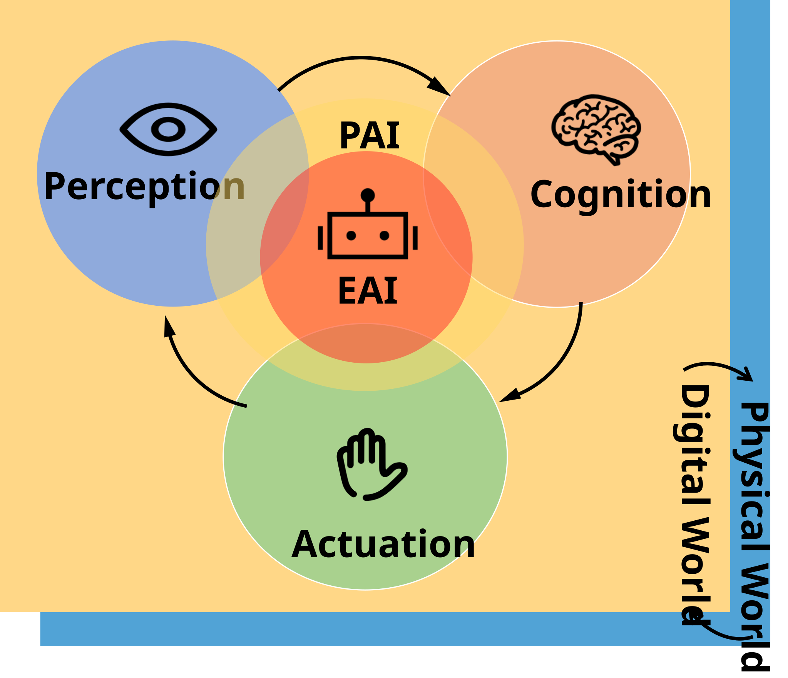
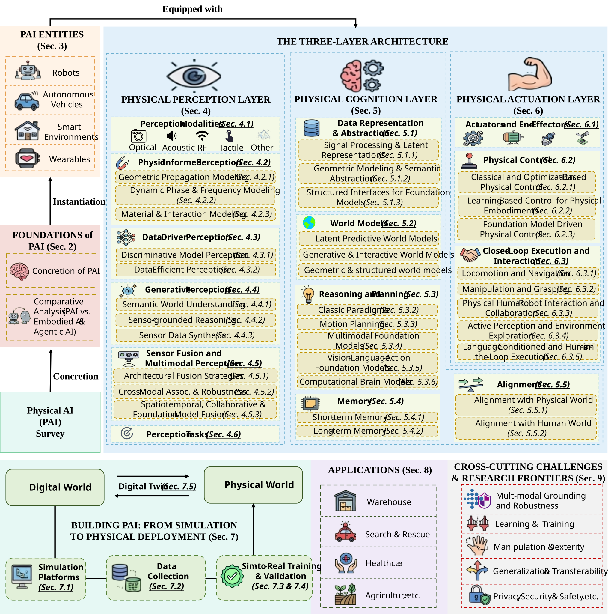
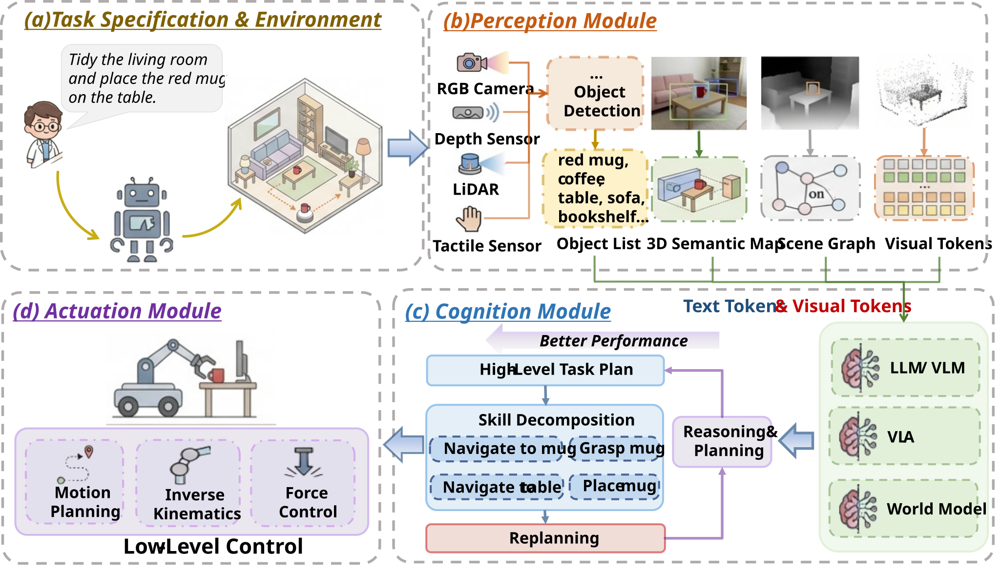

Comprehensive Survey · Physical AI · Systems Perspective
Physical AI: A Comprehensive Survey of Enabling Technologies From a Systems Perspective
A system-level synthesis of Physical Artificial Intelligence (PAI) — extending AI beyond the digital domain
through tightly coupled perception, cognition, and actuation grounded in real-world interaction.
Shengding Liu1,*
Zhanwei Zhang1,*
Zhiying Li1
Yudi Lin2
Ruxin Lin1
Xiaoqun Liu1
Khang Nguyen1
Ziran Gao1
Guopeng Liao3
Jingxiang Mo4
Linshan Jiang2
Jianfei Yang2
Osher Azulay5
Stella X. Yu5
Philip S. Yu6
Qiben Yan1,†
1Michigan State University ·
2Nanyang Technological University ·
3Meta ·
4Gradient Robotics ·
5University of Michigan ·
6University of Illinois Chicago
From digital reasoning to physically grounded intelligence
Artificial intelligence (AI) has evolved from predominantly discriminative paradigms toward generative and
agentic intelligence capable of autonomous reasoning, planning, and action. However, despite these advances,
current AI systems remain largely confined to digital environments, lacking physical grounding and embodied
interaction with the real world. To address these limitations, Physical Artificial Intelligence
(PAI) has emerged as a new paradigm that extends AI into the physical domain by tightly integrating
perception, cognition, and actuation under real-world interaction constraints.
Building on progress in robotics, embodied intelligence, sensing, machine learning, and cyber-physical
systems, PAI moves beyond traditionally siloed developments to enable form-agnostic, physics-consistent, and
continuously adaptive intelligence across diverse embodiments and environments. We present the first
comprehensive, system-level survey of PAI, tracing its evolution from conceptual foundations to core
components and ultimately to closed-loop deployment.
Definition
What makes a system Physical AI?
Any intelligent system interacting with the physical world must be able to (i) acquire information from
its environment, (ii) reason over this information to support decision-making, and (iii) act upon the
environment to exert influence. These three requirements naturally correspond to perception,
cognition, and actuation, forming a tightly coupled closed loop.
Beyond this closed loop, PAI further demands that at least one component directly interfaces with the
physical world, that estimation and control respect underlying physical laws, and that cognition keeps
learning after deployment. A system qualifies as PAI when it satisfies four necessary properties:

Three-layer architecture for PAI.
01
Perception–Cognition–Actuation closed loop
The system implements a closed-loop architecture in which perception, cognition, and actuation are
closely coupled, enabling continuous sensing, decision-making, and action under real-world interaction
constraints.
02
Physical-world grounding
The system maintains direct interaction with the physical world through perception, cognition, and/or
physical actuation rather than relying solely on offline data or simulation-based feedback loops.
03
Physics-consistent reasoning & control
The system explicitly incorporates physical laws and operational constraints across perception,
cognition, and actuation, ensuring estimation, prediction, planning, and control remain physically
feasible and consistent.
04
Evolving cognition & deployment-time adaptation
The system possesses the architectural capability to learn from open-world experience after deployment
and to continuously update its cognitive and behavioral policies through feedback-driven adaptation.
Ultimately, PAI is defined by closed-loop, physically grounded, and continuously adaptive intelligence.
Survey Organization
A taxonomy of Physical AI
Our survey traces PAI from concept grounding through fundamental components to
closed-loop deployment. The framework organizes its components along three interdependent
functional layers — perception, cognition, and actuation — across the coupled digital–physical
continuum, and ultimately bridges them through the simulation-to-deployment pipeline, applications,
and cross-cutting challenges.

A unified taxonomy of PAI topics: from system substrates (§3) through perception (§4),
cognition (§5), and actuation (§6), to building PAI from simulation to deployment (§7), applications
(§8), and cross-cutting challenges (§9).
State, world models, reasoning, memory, alignment.
§6
Actuation
Actuators, control, closed-loop interaction.
§7
Building PAI
Simulators, data, sim-to-real, validation, digital twins.
§8
Applications
Industry, mobility, healthcare, extreme, space.
§9
Challenges
Integration, co-design, robustness, safety.
§10
Roadmap
Toward general-purpose PAI.
Section 3
PAI embodiments and system substrates
To operate in the physical world, intelligence cannot exist in isolation; it must be instantiated in a PAI
embodiment capable of sensing, reasoning, and interacting with its environment. PAI embodiments comprise a
diverse spectrum of systems that share one objective: grounding intelligence in physical reality through a
continuous closed loop of perception, cognition, and action.
Representative PAI entities across embodiment categories: (a) fixed-base manipulator,
(b) quadrupedal robot, (c) humanoid, (d) mobile manipulator, (e) bionic robot, (f) autonomous vehicle,
(g) UAV, (h) smart glasses, (i) smart home, (j) smartwatch, and (k) next-generation PAI hardware.
3.1 · Robots
Robots constitute one of the most prominent and mature embodiments of PAI, serving as fully integrated
platforms that combine rich multi-modal sensing, physical actuation, and onboard intelligence. This tight
coupling between intelligence and physics manifests across a rich variety of morphologies, each tailored to
different environments and tasks.
Fixed-base manipulators
Bolted to a factory floor or laboratory bench (e.g., Franka Emika Panda), indispensable wherever
sub-millimeter repeatability matters. PAI upgrades them with vision-guided grasping, force-aware
insertion, and language-conditioned task switching.
Mobile manipulators
Wheeled bases combined with dexterous arms (e.g., Mobile ALOHA) navigate unstructured spaces and
perform fine-grained tasks on arrival, learning skills through imitation from human demonstrations.
Legged & quadruped robots
Robots like Unitree Go2 trot over rubble, climb stairs, and recover from shoves using
reinforcement-learning controllers and proprioceptive feedback for terrain uncertainty.
Humanoid robots
Mirroring the human body plan (e.g., Unitree G1) for plug-and-play compatibility with human
infrastructure — performing tool-use, whole-body manipulation, and bipedal locomotion.
Biomimetic & soft robots
Drawing on nature itself, exploiting compliance, elasticity, and underactuation to squeeze through
gaps, gently grasp fragile objects, or fly by flapping wings (e.g., Bionicbird MetaFly).
Unifying principle
Intelligence is not overlaid on a passive body but emerges from the interplay between an agent's
physical form and the world it inhabits.
3.2 · Autonomous vehicles
Autonomous vehicles represent a large-scale and safety-critical instantiation of PAI, operating in open,
dynamic, and highly uncertain real-world environments. Modern systems integrate cameras, LiDAR, radar,
inertial measurement units, and increasingly wireless V2X communication, moving beyond rule-based pipelines
toward unified perception–prediction–planning frameworks. Beyond passenger cars, PAI powers self-driving
delivery robots, autonomous forklifts, maritime vessels, and unmanned aerial vehicles such as Meituan's
delivery drones, demonstrating PAI at the intersection of logistics and aerial robotics.
3.3 · Smart edge systems
Smart edge systems operate quietly at the edge of the physical world, embedding intelligence directly into
devices that sense and interact with real-world dynamics under resource, energy, and latency constraints.
This category unifies both infrastructure-level and human-centric embodiments of PAI.
Infrastructure-level smart environments
Networks of sensors, actuators, and edge computing nodes form a collective PAI fabric. The Google Nest
ecosystem orchestrates distributed devices for context-aware automation, energy optimization, and home
security. NVIDIA's AI-RAN platform fuses 5G/6G processing and AI workloads onto shared GPU
infrastructure, transforming base stations into distributed edge AI nodes.
Human-centric wearables
Wearables bring PAI directly onto the human body, turning every gesture, heartbeat, and gaze into a
stream of physically grounded data. Smart glasses (Ray-Ban Meta) overlay context onto the visual field;
smartwatches (Apple Watch) monitor physiology continuously; emerging EMG wristbands let users issue
commands through subtle muscle contractions.

An autonomous warehouse picking robot illustrating the closed-loop PCA pipeline from
multi-modal perception, through structured world modeling and reasoning-driven planning, to physically
grounded actuation.
Section 4
Physical perception
Physical perception is the primary mechanism through which PAI systems acquire information about their
surroundings. We survey its foundations along four layers: modalities through which the world is
observed; methods that interpret raw signals (physics-informed, data-driven, and generative);
sensor fusion and multimodal perception; and representative perception tasks.
Physical perception layer overview. Diverse modalities (§4.1) acquire heterogeneous data;
physics-informed (§4.2), data-driven (§4.3), and generative (§4.4) methods extract information from raw
signals; sensor fusion (§4.5) integrates streams across space, time, and agents; and representative
perception tasks (§4.6) span object-, scene-, and human-centered sensing.
4.1 · Perception modalities
Perception in PAI begins with the choice of sensing modality. Each modality is governed by distinct physical
principles that dictate signal generation and environmental interaction, and entails distinct trade-offs.
Because no single modality suffices, these complementary trade-offs motivate multimodal fusion and
physics-aware perception design.
Optical
Reflection, absorption, and emission of visible & IR light. Dense geometry, appearance, and material identification.
RGB / depth / LiDAR / hyperspectral
Acoustic
Mechanical wave propagation through air, liquids, or solids — strong material/tissue interaction, ranging, and subsurface sensing.
Microphones · Ultrasonic
Tactile
Contact-force and deformation transduction; direct measurement of contact dynamics critical for manipulation.
Capacitive · Piezoelectric · Resistive
RF
Electromagnetic propagation, reflection, and multipath — penetrates walls and occlusions for non-line-of-sight sensing.
WiFi · mmWave · UWB · RFID
Thermal
Infrared radiation and heat transfer — operates in darkness and reveals temperature and heat flow.
IR cameras · Thermopiles
Magnetic
Magnetic field sensing and disturbance detection — contactless, robust to visual occlusion.
Magnetometers · Hall sensors
Inertial
High-temporal-resolution acceleration and angular-velocity measurement for motion tracking.
Accelerometers · Gyros · IMUs
Beyond human senses
By exploiting a broader range of physical mechanisms, PAI extends perception beyond human sensory limits.
4.2 · Physics-informed perception
Physics-informed perception grounds inference in first-principles models of signal generation, propagation,
and interaction, leveraging analytical models and classical signal processing rather than learned
representations. We organize this body of work into three categories.
4.2.1
Signal propagation modeling
When wave propagation admits a first-principles model, spatial awareness can be recovered analytically
from deterministic wave geometry — time-of-flight, angle-of-arrival, and multipath differences. Methods
exploit environmental reflections (VoLoc, LEAD, 2xTrack) or actively engineer the propagation path with
retro-reflective tags (Millimetro, Hawkeye, EchoBLUE).
4.2.2
Phase & frequency dynamics modeling
Phase and frequency dynamics encode microscopic motion such as structural vibration and respiration.
mmVib, DF-Sense, Platypus, and SwiftTrack isolate weak micro-motions from environmental noise and
compensate for Doppler shifts and phase jumps under fast motion.
4.2.3
Physical interaction & transduction
First-principles models can recover material state and structural form by relating physical properties
to measurable signal changes — internal composition (AgriTera, TMSense), surface geometry (RFlect,
mmNorm), and mechanical dynamics (WiForce).
4.3 · Data-driven perception
Data-driven perception replaces explicit physical modeling with statistical learning from sensor data —
physics-informed methods encode physical laws while data-driven methods learn sensor-to-semantic mappings
from samples. We focus on systems designed for well-defined perception objectives within fixed semantic
scopes.
4.3.1
Task-specific discriminative perception
Maps sensing signals directly to semantic outputs through learned models. CNNs extract task-relevant
patterns (DeepRange, SiFall, mm3DFace); recurrent and attention-based architectures (WiPose, mmEgo,
BMX, RAM-Hand) capture spatiotemporal dynamics for gesture and pose estimation.
4.3.2
Data-efficient perception
Addresses data scarcity through cross-modal alignment (Cosmo, ADMarker, mmET) and domain-shift
adaptation (RF-Net, OneFi, HandFi, BSENSE), shifting emphasis from accuracy on a fixed dataset to
minimizing real-world deployment cost.
4.4 · Generative perception
Recent advances in generative models — LLMs and diffusion models in particular — are transforming physical
perception into a generative, interpretable, and knowledge-driven paradigm. We organize this literature
along three dimensions.
4.4.1
Semantic world understanding
Elevates sensor perception from low-level signals to high-level interpretation of environments,
activities, and latent states. Penetrative AI, ContextLLM, LLaSA, and HoloLLM unify multimodal
sensors in a shared semantic space.
4.4.2
Sensor-grounded reasoning
Couples LLM/VLM reasoning with physically grounded sensor evidence for tasks where pure visual or
textual reasoning falls short.
4.4.3
Sensor data synthesis
Generative models synthesize physically plausible sensor data — from radar spectra to IMU streams —
augmenting scarce real-world signals for training and evaluation.
4.5 · Sensor fusion & multimodal perception
No single modality is sufficient for PAI under occlusion, illumination change, adverse weather, or sensor
degradation, motivating the fusion of complementary streams (camera, LiDAR, radar, IMU, RF, wearables) into
robust scene representations. We organize this design space along three axes.
4.5.1
Architectural fusion strategies
Where and how tightly modalities are combined within a single agent and frame — early, intermediate, late, and tightly coupled hybrid fusion.
4.5.2
Cross-modal association & robustness
Aligning entities across heterogeneous sensors and compensating for missing or degraded streams.
4.5.3
Spatiotemporal, collaborative, FM fusion
Scaling fusion across time, agents, and language with foundation-model-based mechanisms.
4.6 · Perception tasks
Having reviewed the modalities and algorithmic foundations of PAI perception, we shift from how
perception is realized to what perception enables, examining established and emerging tasks
along three dimensions.
4.6.1
Object perception
Detection, classification, pose estimation, and material/affordance reasoning at the object level — the entry point for downstream manipulation.
4.6.2
Scene perception
BEV, 3D, and 4D scene understanding spanning geometry, occupancy, and dynamics to support navigation and planning.
4.6.3
Human perception
Pose, activity, intention, and physiological-state sensing across modalities — the substrate for safe and intuitive human–robot interaction.
Section 5
Physical cognition
Cognition is the central layer linking perception to actuation, converting raw sensory inputs into
structured representations, predictive models, and executable decisions. Recent PAI systems increasingly
build cognition on foundation models that unify sensing, memory, reasoning, and decision-making within a
shared framework.
Cognitive layer overview. Raw inputs are abstracted into unified latent and structured
representations (§5.1); the cognitive core integrates world models (§5.2), reasoning and planning (§5.3),
and memory (§5.4) for prediction, retrieval, and decision-making; alignment modules (§5.5) constrain the
system through physical and human-value alignment.
5.1 · State representation & abstraction
Cognition does not operate directly on raw sensor streams but on internal states abstracted from perceptual
outputs. A useful cognitive state retains the variables needed for prediction, reasoning, and planning while
discarding modality-specific detail relevant mainly to low-level perception.
Latent state
Compact task-relevant variables distilled from high-dimensional observations.
PlaNet · I-JEPA
Object-/relation-centric
Discrete entities, agent attributes, and their interactions.
Scene descriptions aligned with semantic instructions and affordances.
VoxPoser
5.2 · World models
A world model in PAI encodes the current state, predicts how it evolves, and simulates how the world would
change under candidate actions — supporting imagination, counterfactual reasoning, and planning. We organize
world models into three major routes.
Route A
Latent predictive
Action-conditioned latent dynamics on which planning and policy learning operate directly. Compact,
sample-efficient, naturally supports imagination.
Models future observations directly, typically as videos or action-controllable environments. Scalable
with video data, useful for simulation and synthetic data generation.
Sora · Genie · GameNGen · GAIA-1 · DriveDreamer · CosmosRoute C
Geometric / structured
Makes world state explicit through BEV, occupancy, point clouds, or 3D tokens. Strong spatial
grounding, interpretable geometry, suited to safety-critical control.
OccWorld · Drive-OccWorld · RoboOccWorld · 3D-VLA
5.3 · Reasoning & planning
The reasoning and planning layer connects perception to actuation by transforming sensory observations,
task specifications, and internal state estimates into structured behavior. In PAI, planning is a multi-level
cognitive-to-physical process that interprets intent, decomposes tasks, evaluates physical feasibility, and
produces subgoals, trajectories, or action primitives for downstream control.
5.3.1
Task specification & problem formulation
From classical complete formulations to modern PAI's partial language, demonstration, and multi-modal task descriptions.
5.3.2
Motion planning
Geometric and dynamical grounding — sampling-based, optimization-based, and learning-augmented motion planners.
5.3.3
Foundation-model-based reasoning & planning
SayCan-style affordance grounding, code-as-policy, and tool-use reasoning that bring foundation models into the planning loop.
5.3.4
VLA & action representations
Vision-language-action models and structured action representations bridging cognition and control.
5.3.5
Computational brain models
Cognitive architectures and models of human planning that inspire long-horizon, hierarchical PAI reasoning.
5.4 · Memory
Memory is what distinguishes agentic AI from conventional reactive models. For PAI — robots and embodied
systems interacting with the real world — memory is even more essential: agents must interpret dynamic
environments, recall past interactions, and refine behaviors based on accumulated experience.
5.4.1
Short-term memory
A temporary workspace holding recent inputs, actions, or conversation turns. Implemented through
recurrent and spiking networks with dynamic synapses; memory-augmented architectures such as Neural
Turing Machines extend this with differentiable external memory.
5.4.2
Long-term memory
Persistent storage and retrieval across extended periods, decomposed into:
episodic memory (specific past experiences with contextual details),
semantic memory (general world knowledge and relations), and
procedural memory (action sequences and skill policies). RAG serves as the
memory-access mechanism injecting relevant content into the agent's reasoning.
5.5 · Alignment
Unlike purely digital agents, embodied systems act under irreversible real-world consequences — an error may
become a collision, hardware damage, or a violation of human norms. Alignment in PAI must therefore be
addressed along two coupled fronts and enforced at both training and deployment time.
5.5.1
Alignment with the physical world
Ensuring that internal representations, predictions, and action proposals are compatible with
embodiment, geometry, and causal dynamics. Enforced through cross-embodiment datasets (Open X-Embodiment,
RT-2), 3D-grounded architectures (3D-VLA), and predictive objectives (V-JEPA), plus runtime affordance
prompting (SayCan, ProgPrompt), retrieval, and simulator verification (Mind's Eye).
5.5.2
Alignment with human value
Ensuring feasible actions are also safe, desirable, and norm-compatible. Combines training-time
constrained learning (SafeVLA) and trajectory-level preference optimization (GRAPE, HAPO) with
deployment-time guardrails: constitution-style prompting (AutoRT), retrieval-based safety grounding,
and safe execution interfaces (Code as Policies).
Section 6
Physical actuation and execution
The physical actuation layer translates cognitive intent into forces, motions, and interactions in the real
world. Where perception tells an agent what the world looks like and cognition decides what to do, actuation
determines how the agent physically acts — through what body, along what trajectory, under what
control law, and in what task context.
6.1 · Actuators & end-effectors
An actuator converts input energy and control signals into mechanical output — force, torque, or motion.
PAI systems span rigid, compliant, and soft embodiments. End-effectors, the direct interface between robot
and environment, critically determine manipulation capability.
6.1.1
Taxonomy of actuators
Three dimensions: energy domain (electrical / fluid power / soft & emerging), output motion (linear or rotary), and compliance design (rigid, SEA, variable stiffness).
Actuator limits define the feasible action space; transmission and impedance shape system dynamics and serve as implicit priors for learning, planning, and safety.
6.2 · Physical control
Physical control constitutes the execution layer of PAI. Given subgoals, trajectories, action chunks, or
reference motions produced by reasoning and planning, control maps them into real-time motor commands while
preserving stability, safety, and robustness under embodiment constraints, actuator limits, contact dynamics,
latency, and sensor noise.
6.2.1
Classical & optimization-based control
PID, MPC, impedance/admittance, and convex optimization formulations that leverage explicit dynamics models for stability and constraint handling.
6.2.2
Learning-based control
Deep RL, imitation learning, and residual policies trained on real or simulated interaction data, increasingly embedding physical structure into learned controllers.
6.2.3
Foundation-model-based action generation
VLA models, diffusion policies, and language-conditioned controllers that generate action trajectories or chunks directly from multimodal context.
6.3 · Closed-loop execution & interaction
Unlike pre-programmed motions or one-shot executions, interactive tasks in PAI form a continuous closed loop
of perception → cognition → action → physical feedback → adaptation. Crucially, this interaction occurs not
only over information channels (vision, language) but also over physical energy channels (forces, contacts,
friction), imposing stability, safety, and real-time adaptation requirements.
6.3.1
Locomotion & navigation
Legged locomotion via RL policies (HOVER, ASAP, ANYmal, Unitree Go), wheeled and tracked navigation with SLAM and learned reactive controllers.
Compliant actuation, impedance/admittance control, passivity-aware co-carrying, and ISO/TS 15066-aligned safety primitives for shared tasks with humans.
6.3.4
Active perception & exploration
Visuo-tactile pushing, mechanical search to reveal occluded targets, and embodied question answering — agents act to perceive.
6.3.5
Language-conditioned execution
Reasoning grasping, generalist policies (Octo), and human-in-the-loop RL bring natural-language guidance and online correction into the execution layer.
Closing the loop
Information channels and physical energy channels jointly impose real-time adaptation, stability, and safety requirements that pure perception or planning cannot provide.
Section 7
Building PAI: from simulation to physical deployment
Simulation plays a fundamental role in developing PAI by enabling scalable data generation, safe exploration,
and reproducible evaluation prior to physical deployment. Together these components form a closed loop:
real-world data calibrates simulation, simulation accelerates learning, and real-world deployment re-validates
assumptions.
7.1 · Simulation platforms
Simulators provide virtual environments in which agents perceive, reason, and act under physical constraints.
We organize existing platforms into three families.
7.1.1
General-purpose simulators
Configurable virtual environments with physics engines, supporting diverse embodiments and tasks.
Isaac Sim · Isaac Gym · Gazebo · MuJoCo · PyBullet · Webots · CoppeliaSim · AirSim · Unity ML-Agents7.1.2
Real-scene-based simulators
High realism via real-world scans or photorealistic assets, suited to household activity and indoor navigation.
Data acquisition is the foundation of PAI learning. The pipeline spans real-world robot data, simulation-based
generation, and human video / web-scale corpora.
7.2.1
Real-world robot data
Teleoperation, demonstrations, and large-scale cross-embodiment datasets (e.g., Open X-Embodiment) capture the realities of contact-rich physical interaction.
7.2.2
Simulation-based data generation
Procedural scene generation, replay, and automated data pipelines amplify training data at low cost.
7.2.3
Human video & web-scale data
First-person video and Internet-scale image / language data provide priors for affordances, semantics, and motion.
7.3 · Sim-to-real training
Reliable PAI systems require training paradigms that bridge simulation and real-world deployment. We organize
sim-to-real transfer into three regimes.
7.3.1
Domain randomization
Visual, dynamics, and sensor randomization, with adaptive (ADR, BayesSim) variants.
Calibrating simulator parameters to real dynamics through optimization or Bayesian inference.
7.3.4
Real2Sim2Real pipelines
Real-world capture is digitized into simulation for amplification, then redeployed.
7.3.5
Real-world adaptation & fine-tuning
On-robot fine-tuning and online adaptation close the residual gap after sim training.
7.3.6
World-model-assisted training
Learned world models serve as differentiable simulators for policy improvement and post-training.
7.4 · Validation & benchmarks
Reproducible evaluation is critical for safe, comparable progress. We separate simulation benchmarks from
real-world validation protocols.
7.4.1
Simulation benchmarks
Standardized tasks, metrics, and embodiments for reproducible comparison across algorithms.
7.4.2
Real-world validation protocols
Hardware-in-the-loop testing, deployment audits, and safety assessments under realistic operating envelopes.
7.5 · Digital twins
Digital twins maintain synchronized digital replicas of physical assets, providing infrastructure for
continuous validation and online optimization.
7.5.1
Concept & architecture
Bidirectional links between physical assets and their digital counterparts enable monitoring, diagnostics, and what-if analysis.
7.5.2
Role in PAI development
Digital twins support cross-layer co-design of perception, cognition, and actuation throughout the PAI lifecycle.
7.5.3
From offline simulation to online sync
Increasingly, twins evolve from offline what-if tools into live, continuously updated co-pilots of physical systems.
Section 8
Applications of Physical AI
Building on the foundational layers introduced earlier, this section surveys representative applications of
PAI organized by the increasing complexity of their operating environments. Together, these scenarios show
how PAI integrates multimodal perception, world-model reasoning, and robust physical control to address
tangible challenges across industrial, mobility, healthcare, hazardous, and space domains.
8.1
Manufacturing & logistics
The most mature commercial deployments of PAI. Smart manufacturing leverages impedance-controlled force
feedback and tactile sensing for tight-tolerance assembly under unpredictable contact, while
warehousing fleets fuse RF, RGB-D, and LiDAR with foundation-model-based language-specified tasks.
Moving from structured factories to open environments, this domain shifts PAI from deterministic
execution to probabilistic anticipation. Autonomous driving fuses cameras, LiDAR, radar, and V2X into
unified BEV scene representations; UAVs and drone swarms employ decentralized multi-agent RL for
cooperative navigation.
Autonomous driving · Aerial & field platforms · Drone swarms8.3
Human-centered & healthcare
Domestic and caregiving settings require PAI to manage continuous, unstructured physical interactions
with humans while strictly guaranteeing safety, compliance, and psychological comfort.
Beyond structured settings, PAI must operate where rules, communication, or standard physical
affordances are absent and errors are often irreversible — combining multimodal compensatory perception
with fully autonomous edge-side decision-making.
Marine & search-and-rescue · Surgery · Nuclear / chemical containment8.5
Space infrastructure
Space operations combine extreme communication latency, the impossibility of physical maintenance,
and altered physical laws, mandating fully autonomous edge-side execution and dynamic recalibration of
control strategies.
Current PAI deployments remain specialized to particular operating envelopes, yet their underlying
demands converge on a common stack: multimodal perception, world-model reasoning, and physically
compliant control. Foundation models for physical intelligence, world foundation models, and VLA models
are increasingly making learned physical priors transferable across embodiments and tasks.
Section 9
Cross-cutting challenges & research frontiers
Realizing scalable, general-purpose PAI requires progress along several intertwined axes that cut across
perception, cognition, and actuation. We highlight the most pressing challenges and outline promising
research frontiers.
9.1
Interdisciplinary integration
PAI operates at the intersection of robotics, machine learning, control theory, materials science,
neuroscience, and mechanical engineering, but progress remains fragmented. Overcoming this bottleneck
requires shared benchmarks, modular interfaces, and unified curricula that emphasize system-level
integration over isolated optimization.
9.2
Hardware–software co-design
Through the lens of Moravec's Paradox, sensorimotor skills remain remarkably difficult relative to
abstract reasoning. Bridging this gap requires evolving algorithms and physical systems together rather
than designing hardware first and adapting algorithms to its constraints.
9.3
Multi-modal grounding & robustness
PAI must integrate vision, tactile, force, audio, proprioception, and RF across diverse temporal
resolutions, noise profiles, and coordinate systems. Failures arise from partial observability and
environmental shift; deformable and articulated objects further demand joint visual–tactile–force
estimation augmented with physical priors.
9.4
Learning & training
PAI learning is constrained by safety, interaction cost, and limited real-world supervision. Although
large-scale pretraining raises the semantic ceiling of robotic policies, it does not automatically raise
the contact ceiling — multimodal vision-touch learning remains crucial for dexterous manipulation.
9.5
Generalization & transferability
Generalization is challenged by intrinsic property variation (weight, friction, stiffness) and
extrinsic data heterogeneity (platforms, sensors, task definitions). Transfer across embodiments and
robust human-to-robot retargeting remain unresolved.
9.6
Manipulation & dexterity
Many manipulation failures share a common root: uncertain, contact-rich dynamics. Bimanual
coordination, long-horizon error accumulation, and dexterous in-hand manipulation remain far below
human-level performance.
9.7
Safety, security & privacy
First-class design objectives across the PAI stack — including verification, adversarial robustness,
and on-device privacy as PAI systems move from labs into homes, hospitals, and public spaces.
9.8
Evaluation protocols
Benchmarks and metrics must measure functional utility for real-world PAI rather than narrow proxy
scores, capturing the full closed loop rather than isolated module performance.
9.9
Trustworthy deployment
Auditability, explainability, and human-AI collaboration as PAI systems move from laboratories to
shared physical and social spaces.
Citation
BibTeX
@article{liu2026physicalai,
title = {Physical AI: A Comprehensive Survey of Enabling Technologies
From a Systems Perspective},
author = {Liu, Shengding and Zhang, Zhanwei and Li, Zhiying and Lin, Yudi
and Lin, Ruxin and Liu, Xiaoqun and Nguyen, Khang and Gao, Ziran
and Liao, Guopeng and Mo, Jingxiang and Jiang, Linshan
and Yang, Jianfei and Azulay, Osher and Yu, Stella X.
and Yu, Philip S. and Yan, Qiben},
journal = {Journal of Artificial Intelligence Research (under review)},
year = {2026}
}